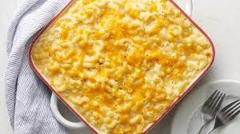

Dutch Oven Macaroni and Cheese

Description
I recommend using a Dutch oven because it just comes out extra delish and the bread crumb crust comes out perfect, but honestly you can use a casserole dish or baking pan, it doesn't really matter.
You can use shells, spirals, or elbow macaroni.
You can use hot sauce instead of taco seasoning.
You can use regular or heavy whipping cream for this recipe, it makes little difference. Also the spice situation is definitely on a scale. Some people like plain-tasting mac and cheese and some like it spiced up a bit. Mine is somewhere in the middle, I'd like to say.
Nutrition Facts
https://www.allrecipes.com/recipe/281199/dutch-oven-macaroni-and-cheese/
Ingredients
- 1 (12 ounce) package seashell pasta
- 4 tablespoons salted butter
- 4 tablespoons all-purpose flour
- 1 cup milk
- 1 cup heavy cream
- 1 cup shredded sharp Cheddar cheese
- 1 cup shredded medium Cheddar cheese
Steps
- Preheat the oven to 400 degrees F (200 degrees C).
- Bring a large pot of salted water to a boil. Add shells and cook, stirring occasionally, until tender yet firm to the bite, about 9 minutes. Drain and set aside.
- Heat an oven-safe Dutch oven over medium heat. Melt butter and flour in the hot pot, stirring, until blended; pour in milk and heavy cream, whisking continuously, until mixture comes to a boil. Continue to boil, stirring continuously, for 2 minutes. Reduce heat to medium-low; continue to stir until sauce thickens, about 10 minutes.
- Slowly fold in cheeses until melted and smooth. It is okay to raise the heat if you have to, just remember to keep stirring while the heat is on. Fold in cooked pasta until it is coated with cheese.
- Combine panko bread crumbs, salt, garlic salt, black pepper, onion powder, and taco seasoning in a bowl. Sprinkle macaroni mixture with just enough of the bread crumbs to coat most of the surface; you should still see some pasta underneath the bread crumbs.
- Bake in the preheated oven for 20 minutes. Turn on the oven's broiler and continue to cook until crust is golden brown and crisp, about 10 minutes. Remove from the oven and let sit for at least 15 to 20 minutes before serving.